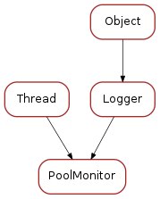

poolmonitor¶
This file contains the pool monitor class
Classes
PoolMonitor¶

-
class
PoolMonitor(pool, name='PoolMonitor', period=5.0, min_sleep=1.0, auto_start=True)[source]¶ Bases:
taurus.core.util.log.Logger,threading.Thread-
MIN_THREADS= 1¶
-
MAX_THREADS= 10¶
-
run()[source]¶ Method representing the thread’s activity.
You may override this method in a subclass. The standard run() method invokes the callable object passed to the object’s constructor as the target argument, if any, with sequential and keyword arguments taken from the args and kwargs arguments, respectively.
-